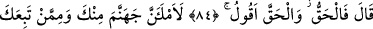
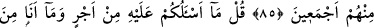
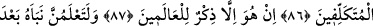
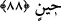
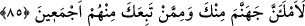
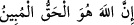
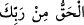
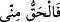
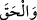

KUR’AN,
ÂLEMLER İÇİN
BİR ÖĞÜTTÜR
84. Doğrusu -ki ben hep doğruyu söylerim- buyurdu.
85. Mutlaka sen ve sana uyanların hepsiyle cehennemi dolduracağım!
86. (Rasûlüm!) De ki: Buna karşılık ben sizden bir ücret istemiyorum. Ve ben
olduğundan başka türlü görünenlerden de değilim.
87. Bu Kur’an, ancak âlemler için bir öğüttür.
88. Onun verdiği haberin doğruluğunu bir zaman sonra çok iyi öğreneceksiniz.
Allah Teâlâ:“Doğrusu -ki ben hep doğruyu söylerim- buyurdu.”
() ifâdesinin haberi mahzuf bir mübtedâ olup takdiri () şeklindedir. Bu
durumda hak, ya () âyetindeki gibi, Allah’ın ismi olan Hak’tır ya da
bâtılın zıddı olan haktır. Allah bu mânâdaki hakka yemin etmek sûretiyle azametine
dikkat çekmiştir. İbarenin -tıpkı () yâni “hak Rabbindendir” (el-Bakara
2/127) âyetindeki gibi- () yâni “hak bendendir” şeklinde olması da mümkündür.
() ifâdesi () fiilinin mef’ulü olarak mansup olmuştur. ()’den önce gelmesi
de “ben gerçek (hak) olanın dışında hiçbir şey söylemem!” anlamında bir hasr ifâde
etmek içindir.
85. Mutlaka sen ve sana uyanların hepsiyle cehennemi dolduracağım!
Ey İblis! “Mutlaka” hem “sen ve” senin şeytânî cinsinden hem de Âdem’in
zürriyyetinden kötü bir tercihte bulunarak dalâlet ve sapkınlıkta “sana uyanların
hepsiyle cehennemi dolduracağım!”